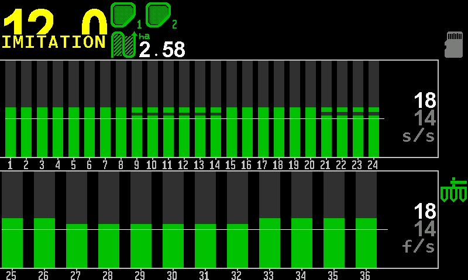

The section diagram — columns, line and colours
How to read the columns of the home screen in the "Precise" and the "Flow" mode, and what the control line means.
Each column of the diagram is one section — one seed or fertilizer sensor. Its height is the flow through that section. How the rest is drawn depends on the seeding control mode: “Precise” (seeds per metre, with skips and doubles) or “Flow” (seeds per second against an alarm level).
“Precise” mode

- Target rate. Grey, in seeds per metre (s/m). This is the figure “PLUS” and “MINUS” change.
- Measured rate. White — the average of the rows now.
- Tolerance. The permitted deviation from the target, in per cent.
- Rate line. The target, drawn across all rows.
- Upper tick. The upper limit of the tolerance, in each column.
- Lower tick. The lower limit of the tolerance.
- Column. Green — the row sows within the tolerance.
- Skips bar. Yellow hatching on the left edge of a column. The taller it is, the more skips in that row.
- Doubles bar. Blue hatching on the right edge of a column. The taller it is, the more doubles.
- Section number.
“Flow” mode

- Alarm level. Grey, in seeds per second (s/s). The level under which a section counts as losing flow. “PLUS” and “MINUS” change it.
- Measured rate. White — the average of the rows now.
- Control line. The alarm level, drawn across all rows.
- Column above the line. Green — the row works.
- Empty part of a column. Dark grey above the green: the higher the green reaches, the more flow.
- Section numbers. Fertilizer sections continue after the seed sections.
- Fertilizer diagram. The same, for the fertilizer sensors.
- Fertilizer rate field. Measured on top, alarm level below, in fertilizer per second (f/s).
The line: rows under it are not under control
The line is the boundary of a partial blockage, not a decoration. A column above the line is a row that works; a column that sinks under it is a row that is losing flow — long before it blocks completely.

- “NOT UNDER CONTROL”. The rows of this diagram are not watched.
- Columns under the line. Every row delivers less than the level.
- Control line. Dragged above the real flow.
- Alarm level. 18 seeds per second — more than the machine sows.
- Measured rate. 15 seeds per second.
Rows under the line are not under control on purpose: the panel refuses to guard a level that was set above what the machine really delivers. Lower the level until the columns stand above the line, or let the panel set it: Set the alarm level automatically.
Whether the machine is seeding at all, the panel decides by the share of rows that are seeding — a sensor setting, 20 % by default. On the headland the rows drop out of control; on the next pass they come back, with or without a work position sensor. The panel says so with sound: three short beeps when the seeding stops, one short beep when it starts again.
What every colour and symbol of a column means, and the four states of a section: Column colours and section states.
Something your machine does that this page does not answer? Write to support@agriwelt.com — an engineer answers.